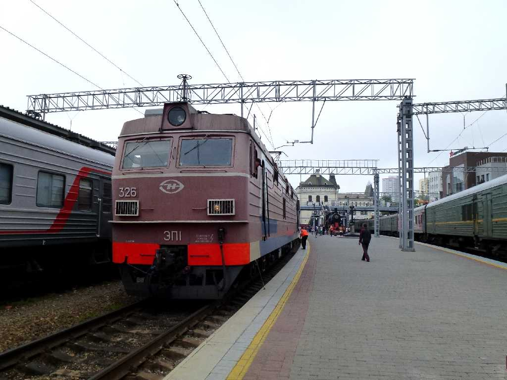
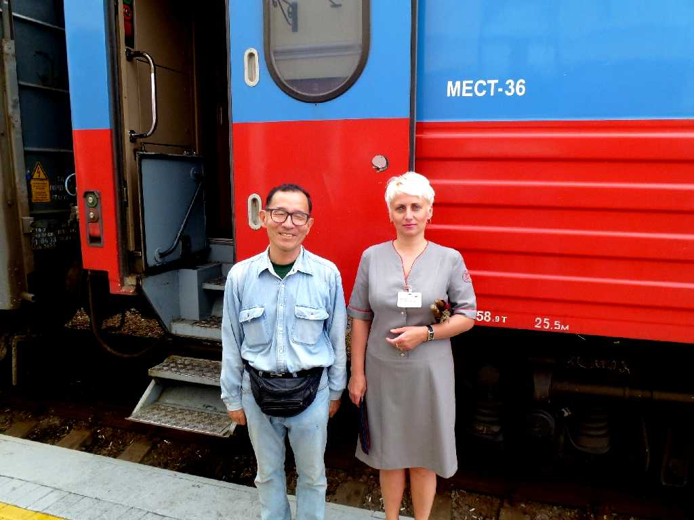

June 26 2013 Russia No.1 Vladivostok Station Vladivostok
Russia No.1 Timetable Trans Siberian Railway June 26 11:25 Vladivostok to July 2 5:52 Yaroslavsky Moscow
８０日間世界一周鉄道の旅で３日目の今日からシベリア鉄道のロシア１号でウラジオストクからモスクワまで９,２８８ｋｍを走破する６泊７日の旅が始まる ホームには引退した蒸気機関車とモスクワ迄の距離が記されている

June 26 2013 Russia No.1 Vladivostok Station Trans Siberian Railway
ウラジオストク駅１１：２５(モスクワ時間４：２５)発モスクワのヤロスラフスキー駅７日目５：５２着に向け出発 所要時間１４５時間２７分総平均時速６４ｋｍ/ｈ